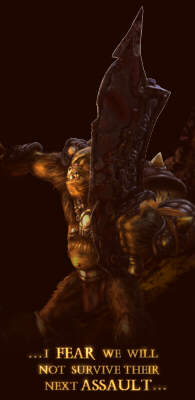

|
|

|
|
|
|

 gothic II story
gothic II story
|
Stefan Kalveram (story author) and Bj�rn Pankratz (game designer) grant you a first glimpse at gothic II's epic story:
The World
King Rhobar was all alone in his throne room, staring pensively at the piece of ore lying in front of him. With a certain fascination he examined the numerous violet veins which gave this solid piece of rock its magical aura.
"My empire was built on the power of this ore, and without ore, I will lose it very soon. Chaos is flooding the kingdom like a storm surge. Peasants rise all over the country, refusing to pay the demanded tolls. And there is nothing I can do about it.
Too many battles were lost, too many soldiers lost their lives. My once so powerful army has become small� far too small to withstand the orcs. Without a new delivery of ore from Khorinis, I fear we shall not survive their next assault."
He rose and went to the window. An eerie silence hung over the town. The only thing to be heard was the distant and monotonous sound of orcish drums.
The king's gaze wandered across the city to the harbor. The wretched merchant ship Esmeralda, remnant of his formerly impressive fleet, was all that was left to him. The remainder of his navy rested at the bottom of the sea now, defeated and sunken by the orcs' mighty galleys.
He tore his eyes away from the sorry sight and looked at the massive chimneys of the melting furnaces. Their fires had not been burning for two weeks now. Sooty and pathetic they towered, like the skeleton of a once powerful kingdom.
Whithout the ore, the king's army had suffered one defeat after another. The armories were empty, and without the ore, there was no way to turn the tide.
Whichever way Rhobar looked at it, he needed the ore!
"I need to make a decision. The ring of besieging forces will very soon surround the entire land, but it is not too late� yet. Sallying out might be the answer, but neither do I have enough men nor enough weapons... no. It is no use. I need ore."
While his gaze ranged his kingdom's capital, he started to make a daring, desperate plan.
"If this plan does fail, all will be lost. Then my empire will be lying in ruins, and only the scholars might remember it. But I will not give up. If I act in time�"
He tore himself out of his lethargy to speak to a valet.
"Send Lord Hagen to me. I need him to perform a very special task."
Soon after, an exhausted warrior entered the throne room. Like most of the other soldiers he hadn't slept in days, and nothing but iron discipline kept him on his feet.
"You've asked for me, my king?"
"Lord Hagen, I need to send you on an important mission. Our survival and the fate of the entire kingdom lie in your hands now. You must not fail!"
"My life is of no importance, my king. I will carry out my duty, even if it spells my doom."
"The 'Esmeralda' is at your disposal. Take one hundred of your best warriors and sail for Khorinis. You shall not return unless the ship's hold is brim-full with ore.
There is no time to waste; head out immediately."
The Game
"When you're in need of something and don't know where to find it,
go to Khorinis. There you can surely buy it."
- Saying (author unknown) -
The mine valley of Khorinis. The glorious days of the once productive mines in this small seaside region were long over. Surrounded by the impenetrable magical barrier, the slaves eked out their miserable existence in this apparently natural prison.
One brave man managed to burst the bonds of imprisonment. Following his own call to freedom, he ventured deep into the subterranean temples.
Willing to do whatever was necessary, he went out to banish Evil and destroy the magical barrier forever. Spurred by the hatred of men long-suppressed, the prisoners streamed trough the only pass to freedom.
No one in Khorinis had been prepared for this. Too long had they lived under the deceptive notion of security granted by the apparently indestructible magical dome.
The small militia garrison could not put up enough forces against the onrush. After numerous bloody clashes, many captives succeded to escape and found safety in the woods or rugged mountains of the surrounding countryside.
The steadily escalating number of raids in the vicinity of the town wall and the bandits' ever-increasing boldness seemed to paralyse the whole town.
Angered by the militia's inability to protect their farms, some of the farmers formed an alliance with the refugees, no longer willing to pay allegiance to the king.
Khorinis is facing an uncertain future. Due to the farmers' decreasing production, more and more of the food deliveries do not take place, and the stocks diminish continuously.
The militia's might ends at the town gate. Outside the town wall, nobody is safe from the bandits' armed raids.
There is war in Khorinis. A civil war.
But there is something else that could not be foreseen.
Evil is not dead, rearing its ugly head again.
But this time it is set on delivering the deathblow to humanity, and no one can stop it.
No one?
translated by our knight in shining armor, nicole 'jaz' schuhmacher
|
|
 |
|